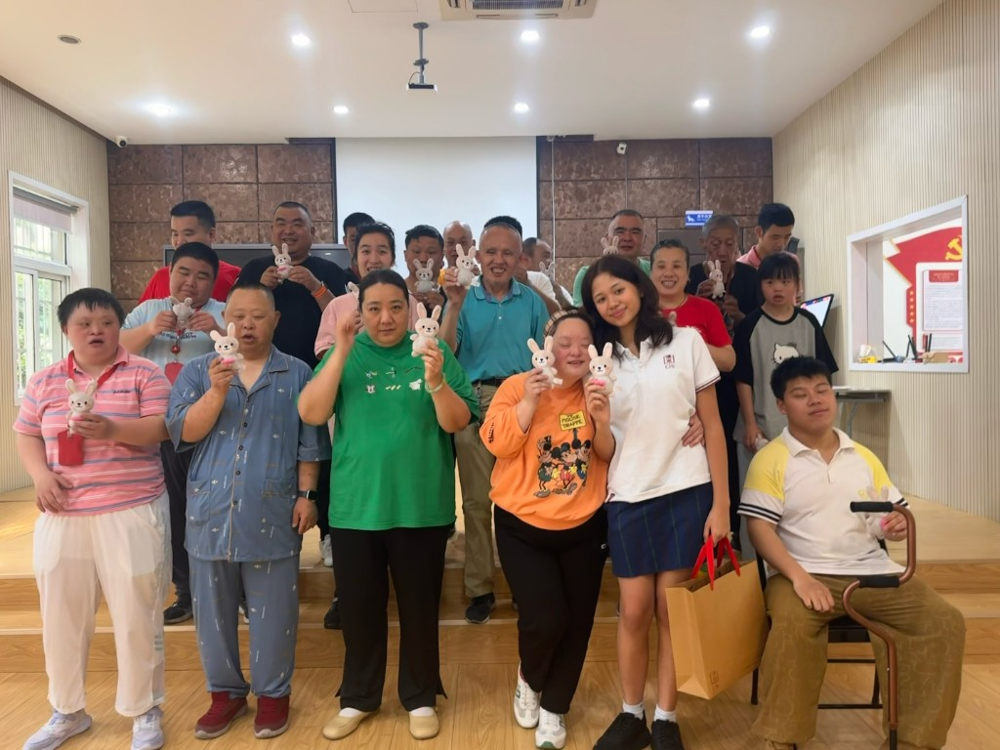
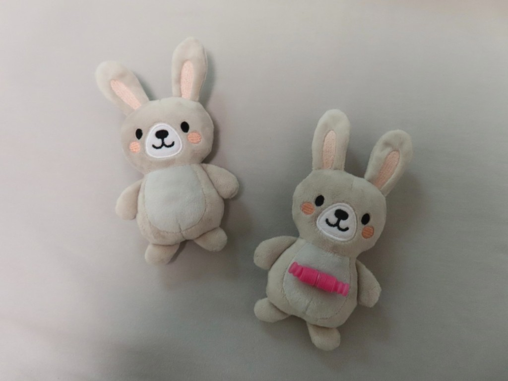
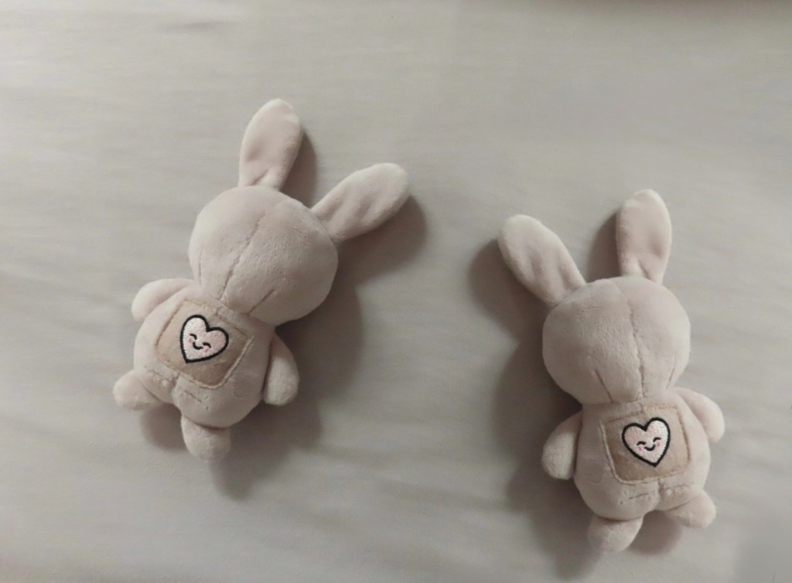
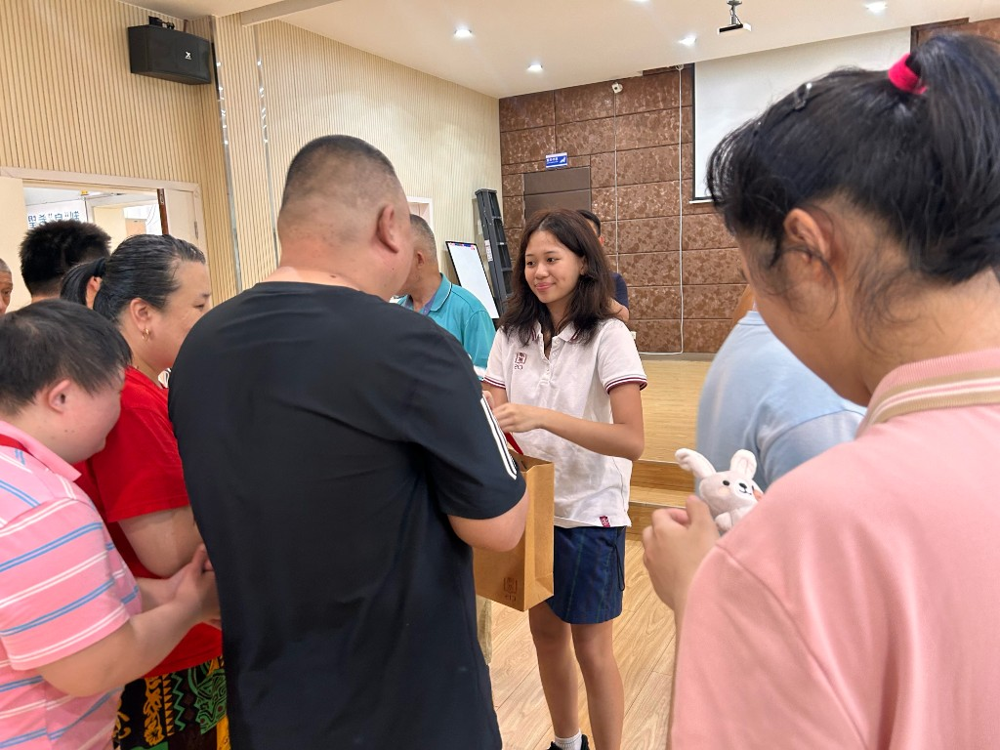
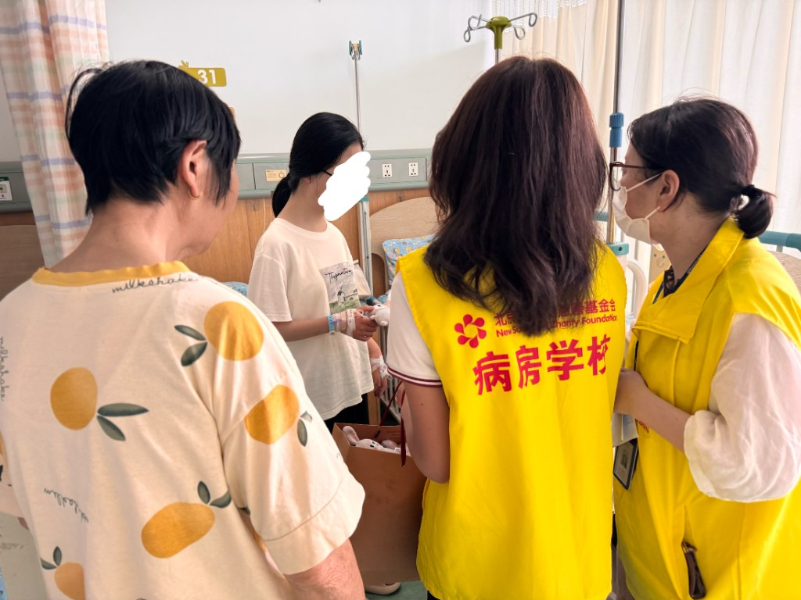
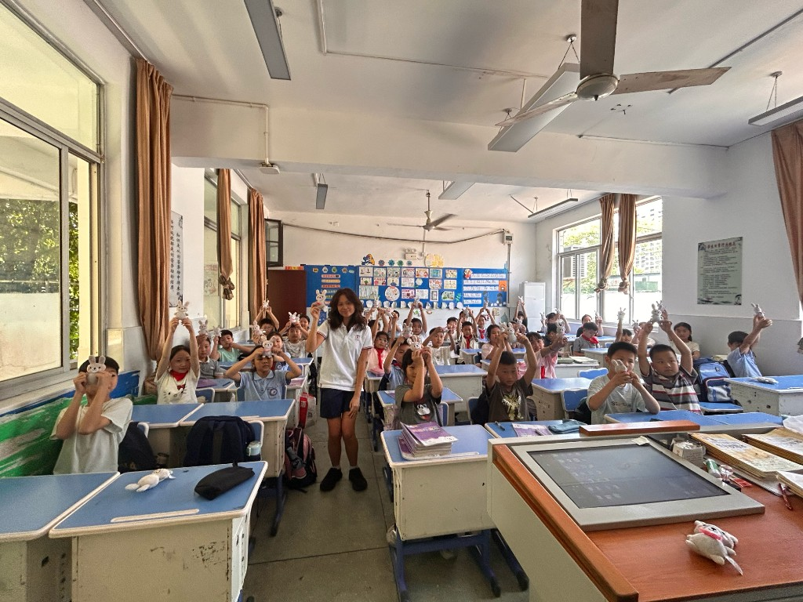

Sensory Smiles

Our Sensory Tools
Soft. Sustainable. Soothing.
Sensory Smiles is an international non-profit that brings calm and comfort to those in sensory distress by providing free sensory tools that support well-being and inclusion for all.
For children, elderly and neurodiverse individuals.


Our products are designed with soft, sustainable materials and customizable features to help soothe individuals with cognitive impairments or sensory processing needs. By addressing sensory regulation, our project directly supports UN Sustainable Development Goals 3 and 10, aiming to reduce inequalities in health and accessibility.
Our Work
Moments of comfort, shared


